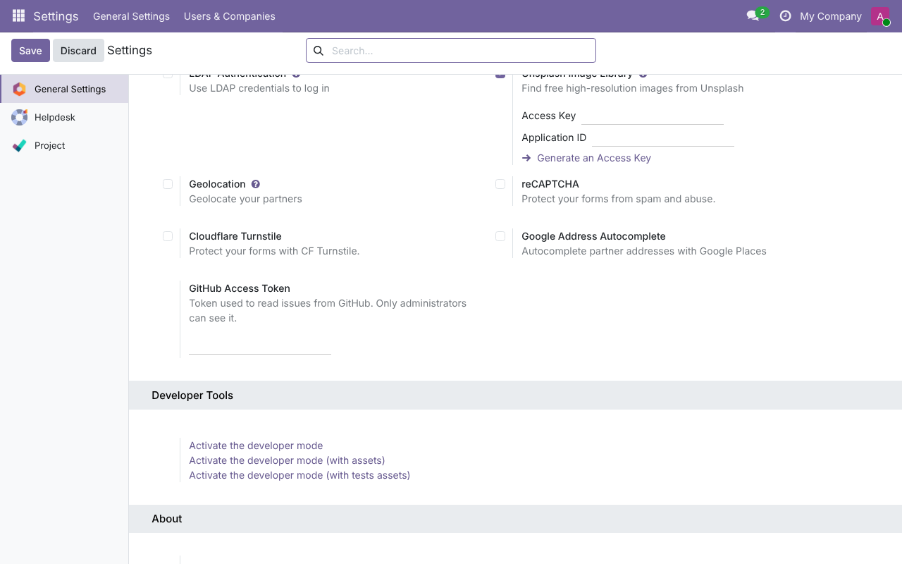

<section class="oe_container">
    <div class="oe_row oe_spaced">
        <h2 class="oe_slogan">GitHub Issue Sync</h2>
        <h3 class="oe_slogan">Shared base of the GitHub modules</h3>
        <p>
            The GitHub client, the access token, the GitHub Login of users and
            the sync logic used by <b>Helpdesk GitHub Sync</b> and
            <b>Project GitHub Sync</b>. It is installed with them and adds no
            menu of its own.
        </p>
        
        <p>
            Setup and development notes are in the
            <a href="https://github.com/lloydvheremu/helpdesk_mgmt_github/tree/main/github_issue_sync">README on GitHub</a>.
        </p>
    </div>
</section>
